Kiến thức chăm sóc chó mèo
Hướng dẫn Spa, grooming, chăm sóc tại nhà và Pet Hotel, ưu tiên câu trả lời thực tế trước khi bạn quyết định đặt dịch vụ.
Mới cập nhật (Cẩm Nang Tuyến Đường · Noel/Tết 2027 & Giống Chó Mèo)
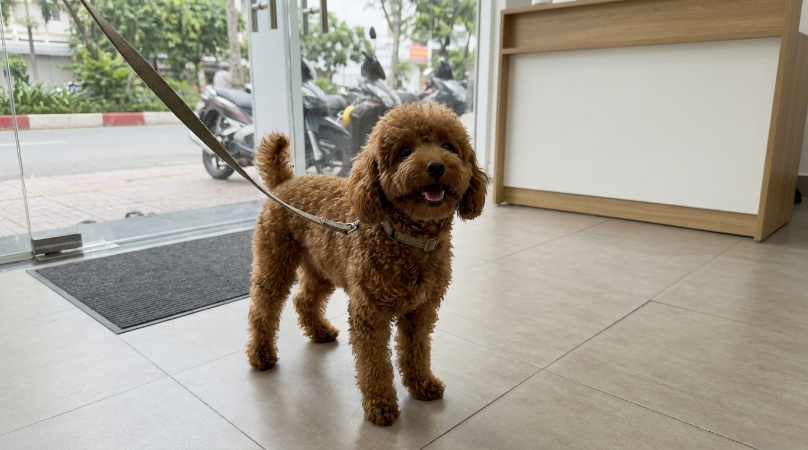
Tắm Chó Mèo Trục Phan Đăng Lưu, Bạch Đằng, Lê Văn Duyệt
Lộ trình 1–3 phút quanh Chợ Bà Chiểu, BV Gia Định, Lăng Ông sang Lumi Pet 27 Võ Trường Toản.
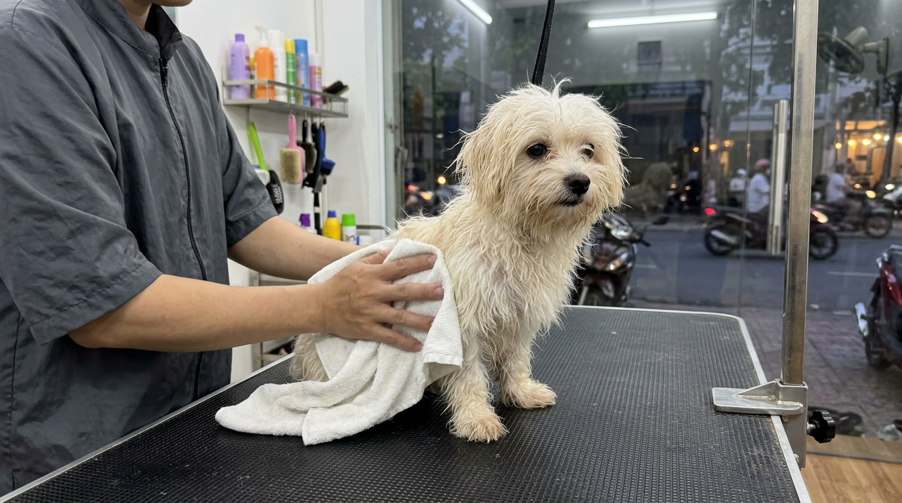
Spa & Gửi Chó Mèo Trục Đinh Bộ Lĩnh, Chu Văn An, Nguyễn Xí
Hướng dẫn tránh kẹt xe giờ tan tầm & gợi ý tắm ca tối tới 21h cho cư dân Phường Bình Thạnh.
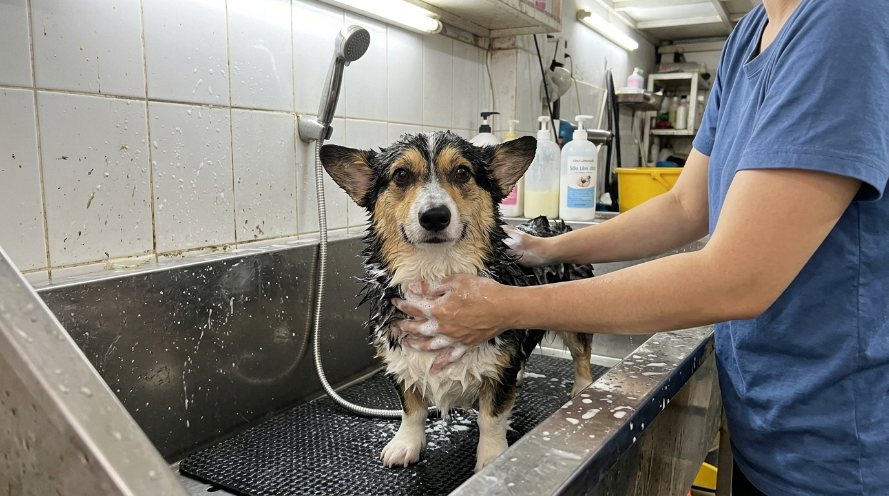
Tắm Chó Mèo Trục Nơ Trang Long, Lê Quang Định, Phan Văn Trị
Lộ trình 1 trục thẳng 5–12 phút từ Bình Lợi Trung, Phạm Văn Đồng, CityLand sang Lumi Pet.

Spa & Hotel Chó Mèo Nguyễn Hữu Cảnh, Điện Biên Phủ, D2
Giải pháp tắm sấy tay 100% & Pet Hotel 24/7 giá minh bạch cách Vinhomes, Saigon Pearl 6–9 phút.
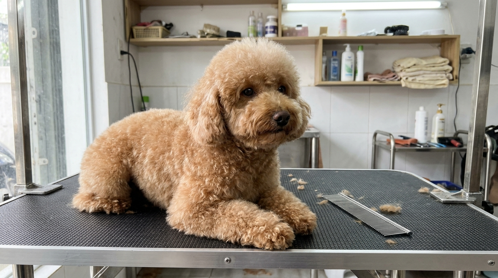
Spa Chó Mèo Trục Phan Xích Long, Đinh Tiên Hoàng, Cầu Bông
Chỉ 4–8 phút qua Cầu Bông hoặc Phan Đăng Lưu từ Phú Nhuận & Quận 1 sang 27 Võ Trường Toản.
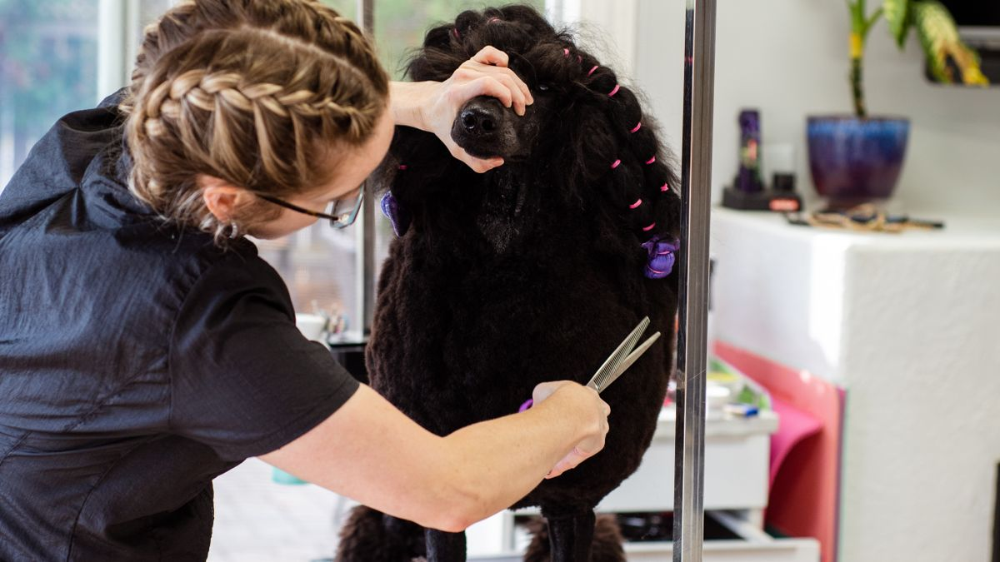
Cắt tỉa lông Poodle Bình Thạnh: Kiểu Teddy & Giá 2026
Bảng giá cắt tỉa Poodle 290k–520k theo cân nặng, 4 kiểu đẹp bền phom và chu kỳ chăm sóc không rối lông.

Gỡ rối lông chó mèo bị bết: Khi nào gỡ, khi nào cạo?
Phân biệt 3 mức độ rối lông, tránh cắt phạm da tại nhà và bảng phụ thu gỡ rối minh bạch 50k–500k.
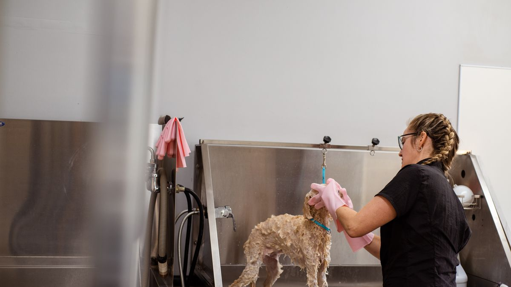
Tắm chó bị nấm, ve rận & viêm da nhẹ: Lưu ý an toàn
Phân định rõ ranh giới Spa hỗ trợ tắm sấy khô 100% vs trường hợp bắt buộc thăm khám bác sĩ thú y.
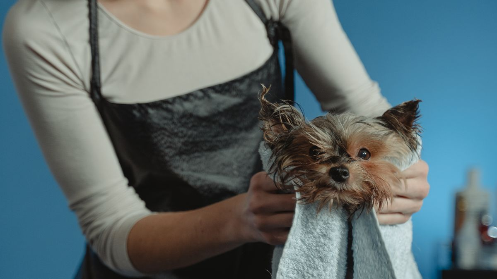
Chó mèo con mấy tháng đi Spa được & bao lâu tắm 1 lần?
Mốc tiêm đủ mũi vắc-xin an toàn (3–3,5 tháng), tần suất tắm chuẩn cho chó 7–14 ngày và mèo 3–6 tuần.

Tắm & Cắt tỉa Bichon, Shih Tzu, Maltese Bình Thạnh
Xử lý ố mắt, sấy bông tròn đầu Bichon và bảng giá cắt tỉa 2026 từ 290k–430k tại Lumi Pet.
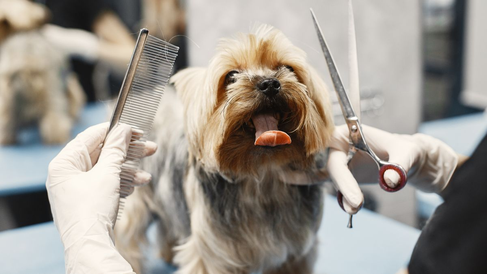
Đặt lịch tắm & cắt tỉa chó mèo cận Tết: Nên đặt khi nào?
Mốc đặt trước 7–14 ngày cho cắt tỉa Poodle/Corgi và 3–5 ngày cho tắm vệ sinh, tránh chờ lâu dịp cao điểm Noel & Tết.
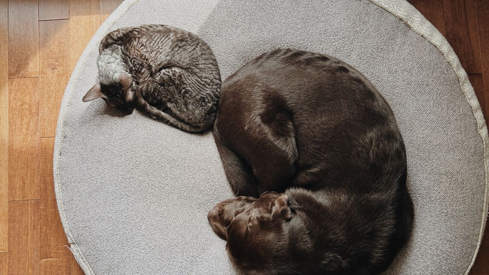
Gửi chó mèo dịp Noel & Tết Dương lịch Bình Thạnh
Phòng riêng máy lạnh 24/24, trực trông giữ 24/7 và quay video Zalo mỗi ngày khi ba mẹ đi chơi Giáng Sinh, nghỉ lễ.
Khảo sát bảng giá Spa thú cưng Bình Thạnh 2026
Phân tích 8 phân khúc cân nặng chó (140k–850k), 3 phân khúc mèo (160k–380k) và bóc tách 5 khoản phụ phí phổ biến.

Spa chó mèo mở cửa tối đến 21h tại Bình Thạnh
Hướng dẫn đặt ca tắm sau giờ tan làm, không phụ thu giờ tối và cam kết sấy tay khô 100% tránh cảm lạnh.

Spa mèo không dùng lồng sấy tại Bình Thạnh
Vì sao sấy tay bằng máy ion giảm ồn ở khu riêng giúp mèo tránh stress và sốc nhiệt so với lồng sấy kín.

Gửi mèo chó dịp Tết Bình Thạnh: 5 kinh nghiệm cần biết
Nên chốt phòng trước bao lâu, checklist tiêm ngừa, đồ mang theo và cam kết trực 24/7 gửi video mỗi ngày.
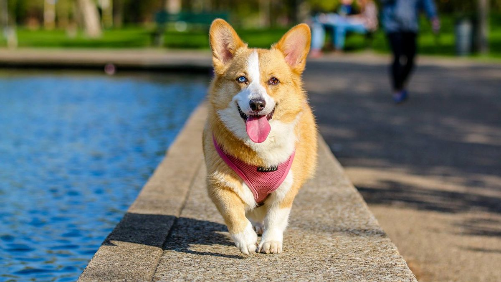
Cắt tỉa lông Corgi mông đào Bình Thạnh giá bao nhiêu?
Bảng giá 2026 (360k–600k) và lưu ý tỉa kéo chuẩn giữ lớp lông kép bảo vệ da cho Corgi.

Cắt tỉa lông Phốc sóc (Pomeranian) Bình Thạnh
Tỉa kiểu gấu Boo từ 290k–360k và cảnh báo tránh cạo sát da 0mm gây rụng lông Alopecia.

Tắm chó lớn Husky, Golden, Samoyed Bình Thạnh
Bảng giá 8 mốc tới 25kg (430k–550k), sấy tay khô tận chân lông kép tránh hôi ẩm.
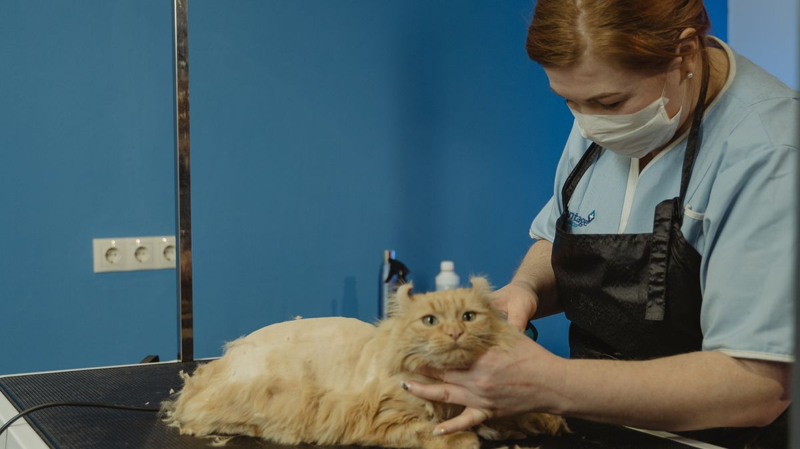
Cạo lông mèo Bình Thạnh giá bao nhiêu?
Combo tắm + cạo mèo 250k–380k tại khu riêng yên tĩnh, tông đơ êm giữ độ dài an toàn.

Tắm mèo Anh lông ngắn, lông dài sạch nhờn đuôi
Xử lý bết dầu gốc đuôi, giảm rụng lông và sấy tay 100% không stress từ 160k–270k.
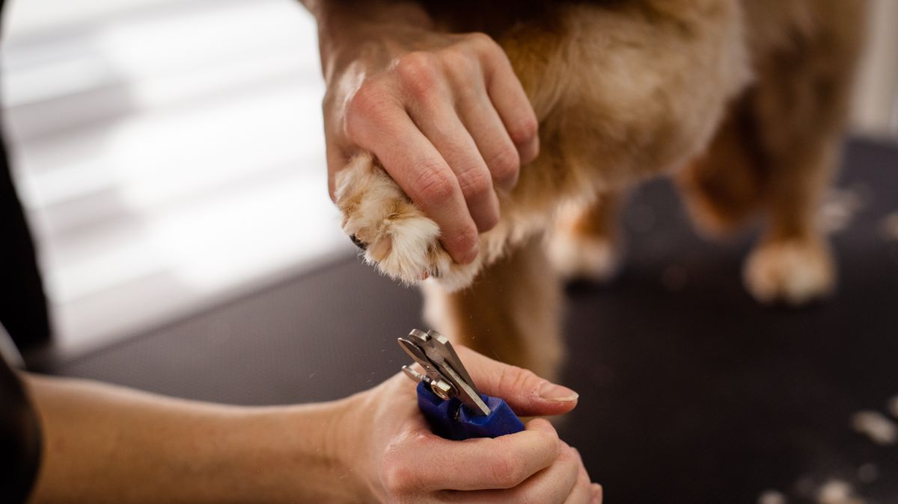
Vắt tuyến hôi cho chó: khi nào cần & lưu ý an toàn
4 dấu hiệu chó đầy tuyến hôi và lưu ý bước vắt tuyến hôi đã bao gồm sẵn trong gói tắm.
Cẩm Nang Riêng Cho Cư Dân Chung Cư Bình Thạnh & Phú Nhuận (4–9 Phút)

Tắm Chó Mèo Cư Dân Vinhomes Central Park & Landmark 81
Lộ trình 7–9 phút dễ dừng ô tô đón trả chó lớn tới 25kg, sấy tay 100% và Pet Hotel 24/7.

Spa Tắm Chó Mèo Saigon Pearl, The Manor & Sunwah Pearl
Khu tắm mèo sấy tay ion riêng biệt không lồng sấy từ 160k, chỉ 6–8 phút qua Ngô Tất Tố – Bạch Đằng.

Tắm & Cắt Tỉa Chó Mèo City Garden, Wilton Tower, Soho
Chỉ 5–6 phút sang 27 Võ Trường Toản, giá cắt tỉa 2026 minh bạch 290k–850k theo cân nặng.

Spa & Gửi Chó Mèo Richmond City, Saigonres Plaza Nguyễn Xí
Hướng dẫn đi nhánh Chu Văn An tránh kẹt Đinh Bộ Lĩnh, tắm tới 21h và Hotel gửi dài ngày giảm 5–8%.

Spa Tắm Chó Mèo Botanic Towers, Orchard Garden, Miếu Nổi
Chỉ 1 trục thẳng Phan Đăng Lưu 4–6 phút sang Lumi Pet: tắm chó 140k, tắm mèo 160k, cắt tỉa 290k.
Pet Hotel
Golden Retriever đi khách sạn cần chuẩn bị gì?
French Bulldog đi khách sạn cần chuẩn bị gì?
Shih Tzu đi khách sạn cần chuẩn bị gì?
Pomeranian đi khách sạn cần chuẩn bị gì?
Corgi đi khách sạn cần chuẩn bị gì?
Chó đi khách sạn có cần tiêm phòng không?
Mèo lần đầu đi khách sạn cần lưu ý gì?
Chó lần đầu đi khách sạn bao lâu thì quen?
Khách sạn thú cưng phòng riêng hay phòng chung?
Poodle đi khách sạn cần chuẩn bị gì?
Mèo đi khách sạn bỏ ăn
Khách sạn thú cưng Bình Thạnh giá bao nhiêu?
Chuẩn bị gì trước khi gửi thú cưng khách sạn?
Khách sạn chó mèo cần kiểm tra gì?
Gửi chó khách sạn 5 ngày giá bao nhiêu?
Gửi chó khách sạn 10 ngày giá bao nhiêu?
Mèo đi khách sạn cần mang gì?
Chó đi khách sạn bỏ ăn
Spa & Grooming
Chó sợ cắt móng khi grooming
Chó 8kg đi Spa giá bao nhiêu?
Chó 15kg đi Spa giá bao nhiêu?
Chó 10kg đi Spa giá bao nhiêu?
Gỡ rối lông chó giá bao nhiêu?
Chó mang thai có đi Spa được không?
Chó con mấy tháng tuổi đi Spa được?
Mèo sợ máy sấy khi grooming
Mèo 5kg đi Spa giá bao nhiêu?
Chó mệt sau khi đi Spa
Chó lớn tuổi đi Spa cần lưu ý gì?
Tắm chó ở nhà hay đi Spa?
Chó lông dài đi Spa nên chọn gói nào?
Chó 5kg đi Spa giá bao nhiêu?
Nên tắm vệ sinh hay tắm cạo cho chó?
Spa chó Bình Thạnh giá bao nhiêu?
Spa mèo Bình Thạnh giá bao nhiêu?
Grooming Poodle Bình Thạnh
Dấu hiệu chó cần grooming
Tắm cạo lông chó giá bao nhiêu?
Cắt tỉa lông chó giá bao nhiêu?
Gỡ rối lông chó mèo khi nào cần?
Grooming chó nhỏ Bình Thạnh
Cách chọn Spa thú cưng Bình Thạnh
Checklist trước khi đặt lịch Spa chó mèo
Những vùng lông chó dễ bị rối
Tắm chó trước hay sau khi cắt tỉa?
Chăm sóc & Poodle/Mèo
Chó hắt hơi sau khi tắm
Chó đỏ mắt sau khi tắm
Chó lắc đầu sau khi tắm: khi nào cần khám?
Mèo bị gàu sau khi tắm
Chó bị gàu sau khi tắm
Poodle bao lâu nên grooming một lần?
Cách chải lông Poodle đúng
Poodle nên để lông dài hay cắt ngắn?
Mèo lông dài bị rối nên làm gì?
Chó run sau khi tắm phải làm sao?
Chó bị ngứa sau khi tắm phải làm sao?
Chó vẫn hôi sau khi tắm
Cách vệ sinh tai chó an toàn
Khi nào cần cắt móng chó?
Tắm chó sau khi đi mưa
Cách giữ lông chó khô sạch tại nhà
Bao lâu nên tắm chó một lần?
Mèo có nên tắm thường xuyên không?
Chăm sóc lông Poodle không bị rối
Chó bị rối lông sau khi tắm
Labrador Retriever đi khách sạn cần chuẩn bị gì?
Checklist breed-specific về sức khỏe, khẩu phần, vận động, hành vi, tai và bộ lông kép trước khi gửi Pet Hotel.
Chó 7kg đi Spa giá bao nhiêu?
Scenario giá riêng cho chó 7kg theo bảng giá first-party hiện hành.